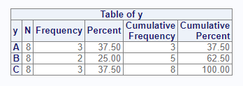
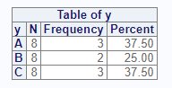
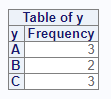
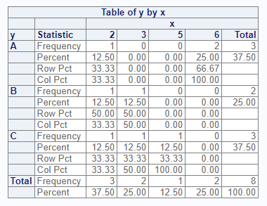
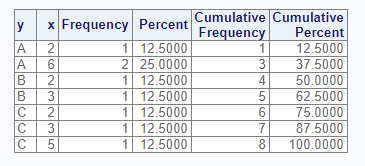
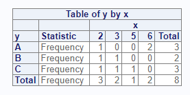
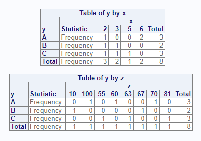
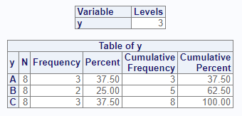
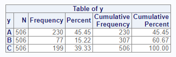
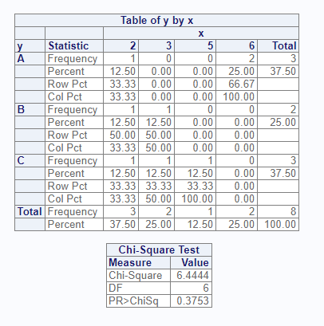

The proc_freq function simulates a SAS® PROC FREQ
procedure. Below is a short tutorial on the function. Notice that the
function is both an interactive function and can return datasets. Unless
you ask for output data, the function is interactive only.
The first step in our tutorial is to create some sample data:
# Create sample data
dat <- read.table(header = TRUE,
text = 'x y z
6 A 60
6 A 70
2 A 100
2 B 10
3 B 67
2 C 81
3 C 63
5 C 55')
# View sample data
dat
# x y z
# 1 6 A 60
# 2 6 A 70
# 3 2 A 100
# 4 2 B 10
# 5 3 B 67
# 6 2 C 81
# 7 3 C 63
# 8 5 C 55Now that we have some data, let’s send that data to the
proc_freq function to see the frequency distribution. The
options() statement below turns off printing of all
procs functions. This statement is necessary so that
the sample code below can pass CRAN checks. When running sample code
yourself, the options statement can be omitted.
# Turn off printing for CRAN
options("procs.print" = FALSE)
# Get frequencies
proc_freq(dat, tables = y)
The above code illustrates a one-way frequency on the “y” variable. The result shows that the “A” and “C” categories appears three times, and the “B” category appears twice. The “N” column shows that there are eight items in the population. This population is used to get the percent shown for each frequency count.
The options parameter can control many aspects of the
proc_freq function. For example, if you did not want the
cumulative frequency and percent, you could turn off these columns with
the option “nocum”.
# Turn off cumulative columns
proc_freq(dat, tables = y, options = nocum)
Let’s say you wanted only the frequency counts, and not the other
columns. This result can be achived with the following options. Use the
v() function when you are passing multiple options:

For two-way frequencies, you can cross two variables on the
tables parameter. This syntax produces a cross-tabulation
table by default:
# Create crosstab
proc_freq(dat, tables = y * x)
If you want the data displayed in a list instead of a cross-tabulation table, you can do that with the “list” option. The “nosparse” option will turn off zero-count categories, which are included by default:

The following options turn off various features of the cross-tabulation table:

The tables parameter accepts more than one table
request. To request multiple tables, pass a quoted or unquoted vector.
Note that proc_freq does not accept grouping syntax, such
as that allowed by SAS®. You must specify each cross-tab
individually:
# Request two crosstabs
proc_freq(dat, tables = v(y * x, y * z),
options = v(norow, nocol, nopercent))
The “nlevels” option can be used to count the number of distinct values in a categorical variable:
# Turn on nlevels option
proc_freq(dat, tables = y, options = nlevels)
The weight parameter is used to achieve weighted
frequencies. When a weight is specified, proc_freq will use
the counts in the indicated variable for all frequency calculations.
# Add weight variable
proc_freq(dat, tables = y, weight = z)
You may request datasets from the proc_freq function
using two options: “out” and “report”. The “out” option requests
datasets meant for output. These datasets have standardized column
names, and sometimes have additional columns to help with data
manipulation. The “report” keyword requests the exact datasets used to
create the interactive report. For both keywords, if there is more than
one dataset, they will be returned as a list of datasets. The name of
the list item will identify the dataset. You may control the names of
the output tables in the list by using a named table request.
Here is an example of the “out” option. The “noprint” option turns off the interactive report:
# Request output data
res <- proc_freq(dat, tables = v(x, y, MyCross = y * x),
options = out)
# View results
res
$x
VAR CAT N CNT PCT
1 x 2 8 3 37.5
2 x 3 8 2 25.0
3 x 5 8 1 12.5
4 x 6 8 2 25.0
$y
VAR CAT N CNT PCT
1 y A 8 3 37.5
2 y B 8 2 25.0
3 y C 8 3 37.5
$MyCross
VAR1 VAR2 CAT1 CAT2 N CNT PCT
1 y x A 2 8 1 12.5
2 y x A 3 8 0 0.0
3 y x A 5 8 0 0.0
4 y x A 6 8 2 25.0
5 y x B 2 8 1 12.5
6 y x B 3 8 1 12.5
7 y x B 5 8 0 0.0
8 y x B 6 8 0 0.0
9 y x C 2 8 1 12.5
10 y x C 3 8 1 12.5
11 y x C 5 8 1 12.5
12 y x C 6 8 0 0.0Notice that the way output datasets are requested from
proc_freq is much simpler than the corresponding mechanism
in SAS®. With proc_freq, you just pass the “out” option,
and all requested tables and statistics will be returned in a list. No
other output parameters are needed.
The options parameter also accepts statistics options.
For two-way tables, you may request either Chi-Square or Fisher’s tests
of association. Here is an example of the Chi-Square test:
# Request Chi-Square and Output datasets
res <- proc_freq(dat, tables = y * x, options = v(out, chisq))
# View results
res
# $`y * x`
# VAR1 VAR2 CAT1 CAT2 N CNT PCT
# 1 y x A 2 8 1 12.5
# 2 y x A 3 8 0 0.0
# 3 y x A 5 8 0 0.0
# 4 y x A 6 8 2 25.0
# 5 y x B 2 8 1 12.5
# 6 y x B 3 8 1 12.5
# 7 y x B 5 8 0 0.0
# 8 y x B 6 8 0 0.0
# 9 y x C 2 8 1 12.5
# 10 y x C 3 8 1 12.5
# 11 y x C 5 8 1 12.5
# 12 y x C 6 8 0 0.0
#
# $`chisq:y * x`
# CHISQ CHISQ.DF CHISQ.P
# 1 6.444444 6 0.3752853The proc_freq function provides three options for
shaping data: “wide”, “long”, and “stacked”. These options control how
the output data is organized. The options are best illustrated by an
example:
# Shape wide
res1 <- proc_freq(dat, tables = y,
options = v(out, wide, noprint))
# Wide results
res1
# VAR CAT N CNT PCT
# 1 y A 8 3 37.5
# 2 y B 8 2 25.0
# 3 y C 8 3 37.5
# Shape long
res2 <- proc_freq(dat, tables = y,
options = v(out, long, noprint))
# Long results
res2
# VAR STAT A B C
# 1 y N 8.0 8 8.0
# 2 y CNT 3.0 2 3.0
# 3 y PCT 37.5 25 37.5
# Shape stacked
res3 <- proc_freq(dat, tables = y,
options = v(out, stacked, noprint))
# Stacked results
res3
# VAR CAT STAT VALUES
# 1 y A N 8.0
# 2 y A CNT 3.0
# 3 y A PCT 37.5
# 4 y B N 8.0
# 5 y B CNT 2.0
# 6 y B PCT 25.0
# 7 y C N 8.0
# 8 y C CNT 3.0
# 9 y C PCT 37.5Next: The Means Function